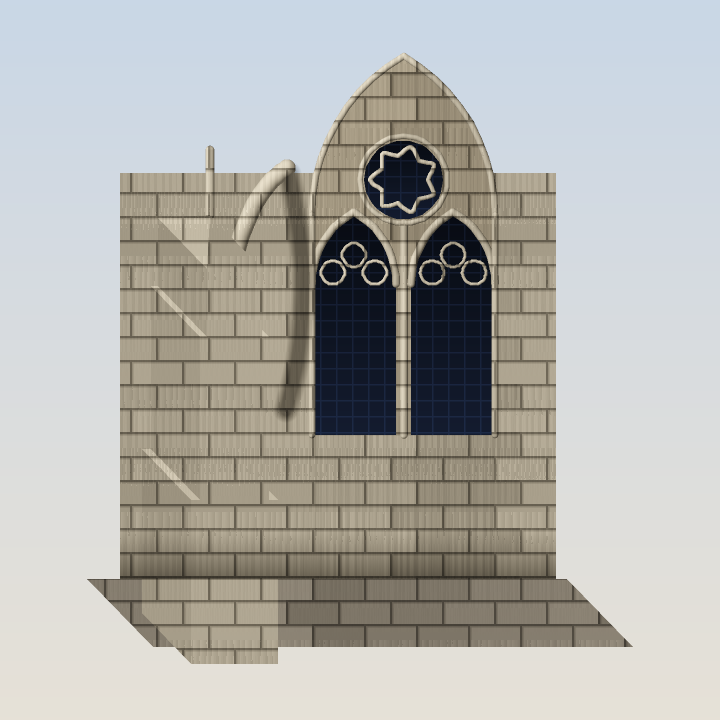
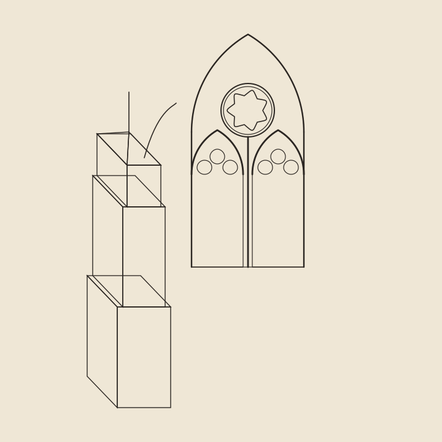

K-0 Architecture Spike — the PROMISE-keeping gothic ceiling
One traceried gothic window + one flying-buttress bay. Pure rational JS, zero GPU, zero trig, byte-deterministic.


A command). The print / plotter comparison; per the No-Compromise ruling it is NOT a fidelity candidate.| metric | value |
|---|---|
| plate resolution | 720 x 720 px (2x supersampled) |
| vector draw-ops (fragment) | 33 |
| of which tracery/window | ~18 |
| 3D faces / bars / glass | 14 / 16 / 3 |
| engraving SVG bytes | 5175 |
| PNG plate bytes (stored DEFLATE) | 1556103 |
Tracery without trig. The pointed arches, trefoils and the enclosing gable are constructible — they live entirely in the
{sqrt2, sqrt3} closure. The oculus is a deliberate septfoil (7 lobes): 7 is not a Fermat prime, so its ring is NOT constructible and is placed from a pinned literal HEPTA_DIRS table. The engine never calls Math.cos/sin/pow.The LOD finding. This fragment is ~33 vector ops. Extrapolated, ONE fully-traceried cathedral is on the order of ~554 ops — about 25% of the whole-town op budget (2200) on its own. A town cannot render every building at cathedral LOD: a per-building LOD ladder (full tracery for signature institutions, massing silhouettes for commons, flat glyphs for distant fill) is mandatory, exactly as the massing substrate already anticipates.
Determinism. Rendering twice produces byte-identical PNG + SVG (verified by
--check and by cmp). All lighting/material math is {+,-,*,/,sqrt} or a pinned rational table, so the plate is reproducible cross-machine — THE PROMISE stays literal.